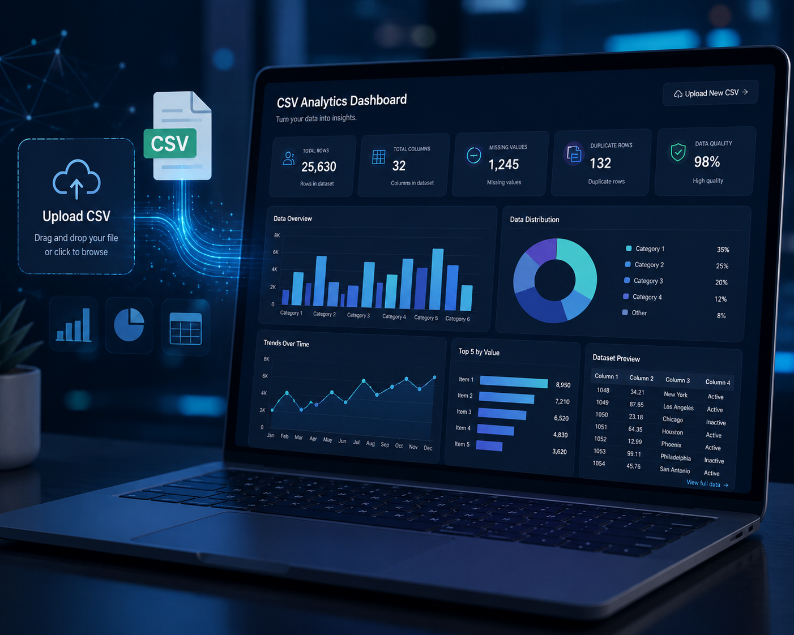

Business Problem
Financial managers often deal with fragmented reports generated from multiple systems, making it difficult to monitor financial performance and identify opportunities to improve profitability.
Executive financial dashboard designed to monitor revenue, expenses, profitability, cash flow and strategic financial KPIs through interactive Business Intelligence visualizations.

Financial managers often deal with fragmented reports generated from multiple systems, making it difficult to monitor financial performance and identify opportunities to improve profitability.
Developed an executive Power BI dashboard integrating financial transactions, profitability indicators, cash flow analysis and strategic KPIs into a single interactive reporting solution.
Monitor revenue, expenses, profitability and financial indicators in real time.
Track cash inflows and outflows with interactive financial reports.
Provide executives with strategic insights for financial planning and business growth.